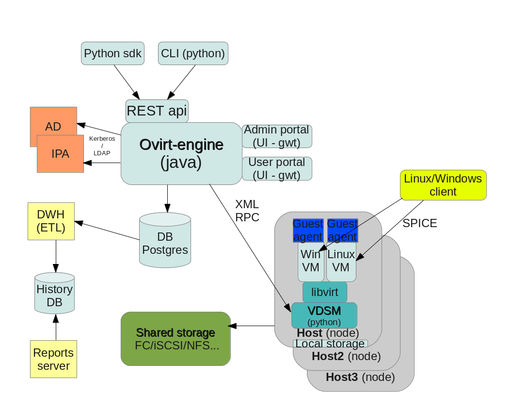
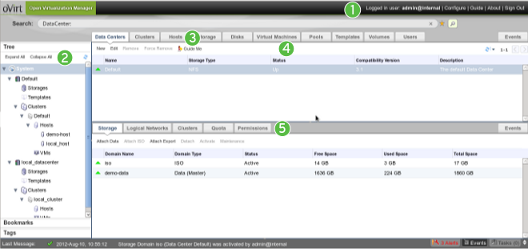
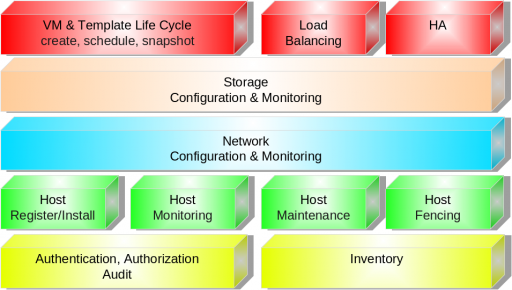
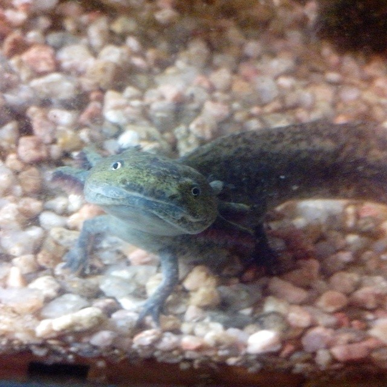
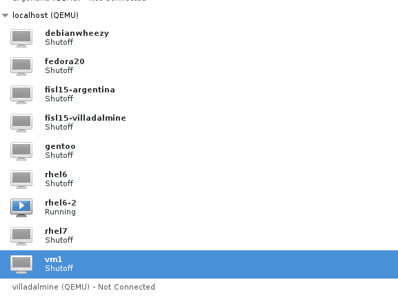
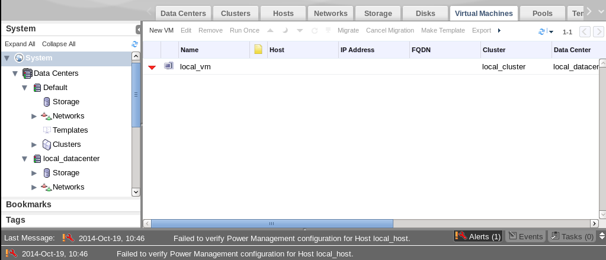

irc.oftc.net #ovirt
Anatomia de una Pasion

Descubriendonos
Engine (ovirt-engine) - manages the oVirt hosts, and allows system administrators to create and deploy new VMs
Admin Portal - web based UI application on top of the engine, that sysadmins use to perform advanced actions.
User Portal - a simplified web based UI application for simpler management use-cases.
REST API - an API which allows applications to perform virtualization actions, which is used by the command line tools and the python SDK
Pero si no se nada..
CLI/SDK - The command line interface and SDK provide a way to communicate with engine via script actions.
Database - Postgres database is used by the engine to provide persistency for the configuration of the ovirt deployment.
Host agent (VDSM) - the oVirt engine communicates with VSDM to request VM related actions on the nodes
Guest Agent - The guest agent runs inside the VM, and provides information on resource usage to the oVirt engine. Communication is done over a virtualised serial connection.
Mi abuela tenia razon!
AD/IPA - directory services. Engine uses them to receive information on users and groups to be used with ovirt's permissions mechanism.
DWH (Data Warehouse) - The data warehouse component performs ETL on data extracted from the db using Talend , and inserts it to history DB.
Reports Engine - generates reports based on data in history DB, on system resource usage, using Jasper Reports
SPICE client - utility which allows users to access the VMs.
¿Pero que debo saber ?
Virtual machine hosts using the Kernel-based Virtual Machine (KVM).
Agents and tools running on hosts including VDSM, QEMU, and libvirt. These tools provide local management for virtual machines, networks and storage.
oVirt; a centralized management platform for the oVirt environment. It provides a graphical interface where you can view, provision and manage resources.
sTORAGE domains to hold virtual resources like virtual machines, templates, ISOs.
Cuanta Magia!!
A database to track the state of and changes to the environment.
Access to an external Directory Server to provide users and authentication.
Networking to link the environment together. This includes physical network links, and logical networks.
Pero que puedo usar..
Data Center - Clusters - Logical Networks - Hosts - Storage Pool
Virtual Machines - Template - Virtual Machine Pool - Snapshot
User Types - Events and Monitors - Reports
Me dejarias probar ...

Quiero ver una foto!!!

Que complicado es el amor..
VM lifecycle management
Authentication via LDAP providers (AD/IPA)
Network management - adding logical networks, and attaching them to hosts
Storage management - managing storage domains (NFS/iSCSI/Local), and virtual VM disks
High Availability - restart guest VMs from failed hosts automatically on other hosts
Live Migration - move running VM between hosts with zero downtime
Todavia hay mas...
System Scheduler - continuously load balance VMs based on resource usage/policies
Power Saver - concentrate virtual machines on fewer servers during off-peak hours
Maintenance Manager - no downtime for virtual machines during planned maintenance windows.
Image Management - template based provisioning, thin provisioning and snapshots
Monitoring - for all objects in system – VM guests, hosts, networking, storage etc.
Export/Import - import and export VMs and templates using OVF files
V2V - convert VMs from VMware and RHEL/Xen environments to the oVirt environment
Pensalo antes de intentar algo..
Buscando lo esencial

La media naranja
Ovirt Live, usa All in One
Soporte Virtualizacion
Tambien usar desde USB Wiki -
live_usb_creator

Donde estas querida!!
Version estable 3.4
Todavia el manager no esta probado en Centos7/Red Hat7
Como la conquisto..
Instalacion desde ovirt-live
Instalacion desde un fisico (engine), y luego los hosts (kvm)
Minimo 4gb/20gb
Fedora19/RHEL/SL/Centos6.4/6.5/Gentoo/Debian/Experimental
Preparando las pilchas
Necesitamos un Host y crear una vm para el ovirt-live con Virtualizacion
echo "options kvm-intel nested=1" > /etc/modprobe.d/kvm-intel.conf
virsh capabalities
A ponerse lindo
Armar una vm para instalar la iso

Con cariño que hay para rato..

EOF
Rino Rondan
Fedora Ambassador & Packager
irc.freenode.net #fedora-latam #fedora-ar
villadalmine@fedoraproject.org